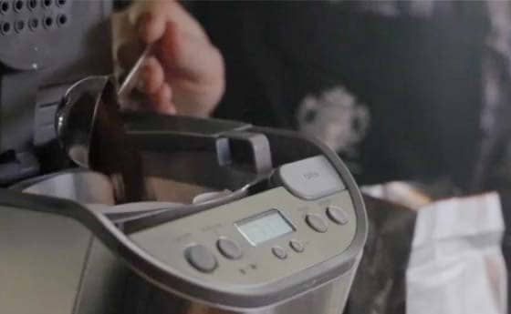
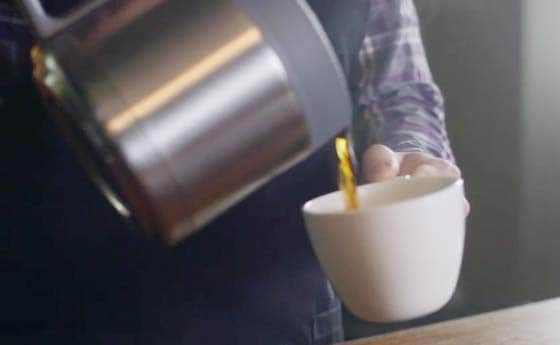

HOW TO BREW
Drip coffee is a convenient way to make great coffee.
With the right grind and pure water, you can brew a fantastic cup of coffee in a coffee brewer.
STEP-BY-STEP

1. Choose the right grind
For a flat bottom filter, use a medium grind that resembles sea salt. Cone filters use a finer grind that resembles granulated sugar.

2. Measure
Use 2 tablespoons of freshly ground coffee for every 6 ounces of water.

3. TIP:
TIP: Brewed coffee is always best fresh, so make as much as you’ll enjoy in a sitting. Reheating coffee can dull the flavor.
The basics about: Coffee
[Back to home page]